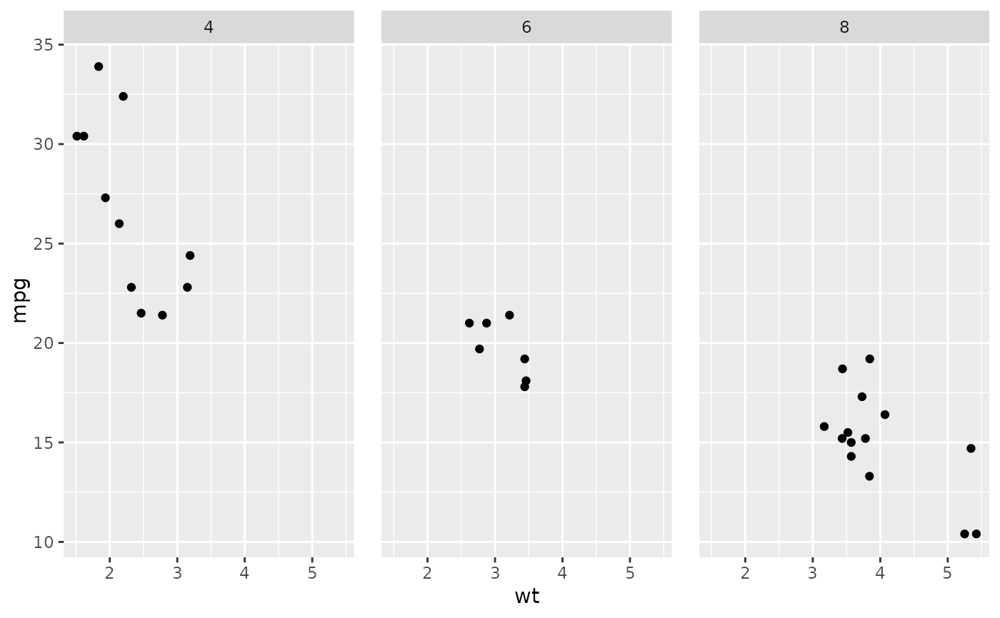
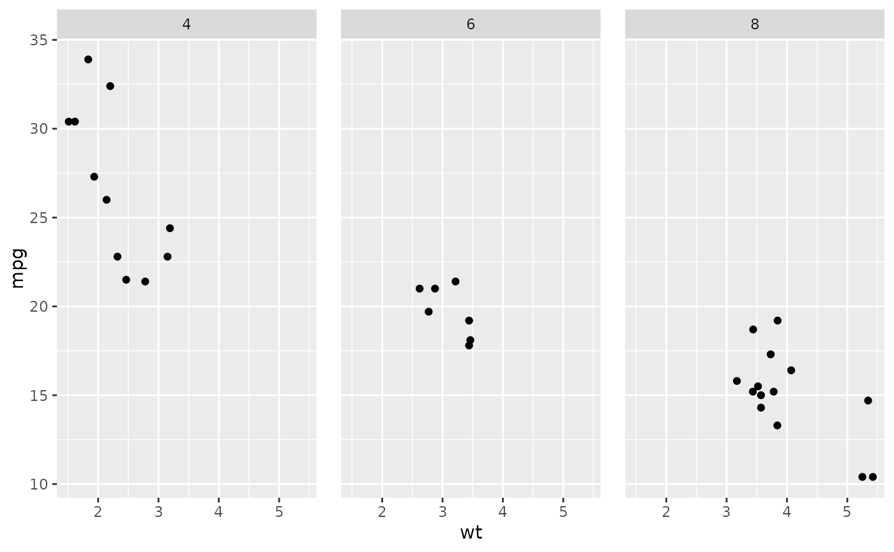

Themes are a powerful way to customize the non-data components of your plots:
i.e. titles, labels, fonts, background, gridlines, and legends. Themes can be
used to give plots a consistent customized look. Modify a single plot's theme
using theme(); see theme_update() if you want modify the active theme, to
affect all subsequent plots. Use the themes available in complete themes if you would like to use a complete theme such as
theme_bw(), theme_minimal(), and more. Theme elements are documented
together according to inheritance, read more about theme inheritance below.
Usage
theme(
...,
line,
rect,
text,
title,
geom,
spacing,
margins,
aspect.ratio,
axis.title,
axis.title.x,
axis.title.x.top,
axis.title.x.bottom,
axis.title.y,
axis.title.y.left,
axis.title.y.right,
axis.text,
axis.text.x,
axis.text.x.top,
axis.text.x.bottom,
axis.text.y,
axis.text.y.left,
axis.text.y.right,
axis.text.theta,
axis.text.r,
axis.ticks,
axis.ticks.x,
axis.ticks.x.top,
axis.ticks.x.bottom,
axis.ticks.y,
axis.ticks.y.left,
axis.ticks.y.right,
axis.ticks.theta,
axis.ticks.r,
axis.minor.ticks.x.top,
axis.minor.ticks.x.bottom,
axis.minor.ticks.y.left,
axis.minor.ticks.y.right,
axis.minor.ticks.theta,
axis.minor.ticks.r,
axis.ticks.length,
axis.ticks.length.x,
axis.ticks.length.x.top,
axis.ticks.length.x.bottom,
axis.ticks.length.y,
axis.ticks.length.y.left,
axis.ticks.length.y.right,
axis.ticks.length.theta,
axis.ticks.length.r,
axis.minor.ticks.length,
axis.minor.ticks.length.x,
axis.minor.ticks.length.x.top,
axis.minor.ticks.length.x.bottom,
axis.minor.ticks.length.y,
axis.minor.ticks.length.y.left,
axis.minor.ticks.length.y.right,
axis.minor.ticks.length.theta,
axis.minor.ticks.length.r,
axis.line,
axis.line.x,
axis.line.x.top,
axis.line.x.bottom,
axis.line.y,
axis.line.y.left,
axis.line.y.right,
axis.line.theta,
axis.line.r,
legend.background,
legend.margin,
legend.spacing,
legend.spacing.x,
legend.spacing.y,
legend.key,
legend.key.size,
legend.key.height,
legend.key.width,
legend.key.spacing,
legend.key.spacing.x,
legend.key.spacing.y,
legend.frame,
legend.ticks,
legend.ticks.length,
legend.axis.line,
legend.text,
legend.text.position,
legend.title,
legend.title.position,
legend.position,
legend.position.inside,
legend.direction,
legend.byrow,
legend.justification,
legend.justification.top,
legend.justification.bottom,
legend.justification.left,
legend.justification.right,
legend.justification.inside,
legend.location,
legend.box,
legend.box.just,
legend.box.margin,
legend.box.background,
legend.box.spacing,
panel.background,
panel.border,
panel.spacing,
panel.spacing.x,
panel.spacing.y,
panel.grid,
panel.grid.major,
panel.grid.minor,
panel.grid.major.x,
panel.grid.major.y,
panel.grid.minor.x,
panel.grid.minor.y,
panel.ontop,
plot.background,
plot.title,
plot.title.position,
plot.subtitle,
plot.caption,
plot.caption.position,
plot.tag,
plot.tag.position,
plot.tag.location,
plot.margin,
strip.background,
strip.background.x,
strip.background.y,
strip.clip,
strip.placement,
strip.text,
strip.text.x,
strip.text.x.bottom,
strip.text.x.top,
strip.text.y,
strip.text.y.left,
strip.text.y.right,
strip.switch.pad.grid,
strip.switch.pad.wrap,
complete = FALSE,
validate = TRUE
)Arguments
- ...
additional element specifications not part of base ggplot2. In general, these should also be defined in the
element treeargument. Splicing a list is also supported.- line
all line elements (
element_line())- rect
all rectangular elements (
element_rect())- text
all text elements (
element_text())- title
all title elements: plot, axes, legends (
element_text(); inherits fromtext)- geom
defaults for geoms (
element_geom())- spacing
all spacings (
unit())- margins
all margins (
margin())- aspect.ratio
aspect ratio of the panel
- axis.title, axis.title.x, axis.title.y, axis.title.x.top, axis.title.x.bottom, axis.title.y.left, axis.title.y.right
labels of axes (
element_text()). Specify all axes' labels (axis.title), labels by plane (usingaxis.title.xoraxis.title.y), or individually for each axis (usingaxis.title.x.bottom,axis.title.x.top,axis.title.y.left,axis.title.y.right).axis.title.*.*inherits fromaxis.title.*which inherits fromaxis.title, which in turn inherits fromtext- axis.text, axis.text.x, axis.text.y, axis.text.x.top, axis.text.x.bottom, axis.text.y.left, axis.text.y.right, axis.text.theta, axis.text.r
tick labels along axes (
element_text()). Specify all axis tick labels (axis.text), tick labels by plane (usingaxis.text.xoraxis.text.y), or individually for each axis (usingaxis.text.x.bottom,axis.text.x.top,axis.text.y.left,axis.text.y.right).axis.text.*.*inherits fromaxis.text.*which inherits fromaxis.text, which in turn inherits fromtext- axis.ticks, axis.ticks.x, axis.ticks.x.top, axis.ticks.x.bottom, axis.ticks.y, axis.ticks.y.left, axis.ticks.y.right, axis.ticks.theta, axis.ticks.r
tick marks along axes (
element_line()). Specify all tick marks (axis.ticks), ticks by plane (usingaxis.ticks.xoraxis.ticks.y), or individually for each axis (usingaxis.ticks.x.bottom,axis.ticks.x.top,axis.ticks.y.left,axis.ticks.y.right).axis.ticks.*.*inherits fromaxis.ticks.*which inherits fromaxis.ticks, which in turn inherits fromline- axis.minor.ticks.x.top, axis.minor.ticks.x.bottom, axis.minor.ticks.y.left, axis.minor.ticks.y.right, axis.minor.ticks.theta, axis.minor.ticks.r,
minor tick marks along axes (
element_line()).axis.minor.ticks.*.*inherit from the corresponding major ticksaxis.ticks.*.*.- axis.ticks.length, axis.ticks.length.x, axis.ticks.length.x.top, axis.ticks.length.x.bottom, axis.ticks.length.y, axis.ticks.length.y.left, axis.ticks.length.y.right, axis.ticks.length.theta, axis.ticks.length.r
length of tick marks (
unit).axis.ticks.lengthinherits fromspacing.- axis.minor.ticks.length, axis.minor.ticks.length.x, axis.minor.ticks.length.x.top, axis.minor.ticks.length.x.bottom, axis.minor.ticks.length.y, axis.minor.ticks.length.y.left, axis.minor.ticks.length.y.right, axis.minor.ticks.length.theta, axis.minor.ticks.length.r
length of minor tick marks (
unit), or relative toaxis.ticks.lengthwhen provided withrel().- axis.line, axis.line.x, axis.line.x.top, axis.line.x.bottom, axis.line.y, axis.line.y.left, axis.line.y.right, axis.line.theta, axis.line.r
lines along axes (
element_line()). Specify lines along all axes (axis.line), lines for each plane (usingaxis.line.xoraxis.line.y), or individually for each axis (usingaxis.line.x.bottom,axis.line.x.top,axis.line.y.left,axis.line.y.right).axis.line.*.*inherits fromaxis.line.*which inherits fromaxis.line, which in turn inherits fromline- legend.background
background of legend (
element_rect(); inherits fromrect)- legend.margin
the margin around each legend (
margin()); inherits frommargins.- legend.spacing, legend.spacing.x, legend.spacing.y
the spacing between legends (
unit).legend.spacing.x&legend.spacing.yinherit fromlegend.spacingor can be specified separately.legend.spacinginherits fromspacing.- legend.key
background underneath legend keys (
element_rect(); inherits fromrect)- legend.key.size, legend.key.height, legend.key.width
size of legend keys (
unit); key background height & width inherit fromlegend.key.sizeor can be specified separately. In turnlegend.key.sizeinherits fromspacing.- legend.key.spacing, legend.key.spacing.x, legend.key.spacing.y
spacing between legend keys given as a
unit. Spacing in the horizontal (x) and vertical (y) direction inherit fromlegend.key.spacingor can be specified separately.legend.key.spacinginherits fromspacing.- legend.frame
frame drawn around the bar (
element_rect()).- legend.ticks
tick marks shown along bars or axes (
element_line())- legend.ticks.length
length of tick marks in legend (
unit()); inherits fromlegend.key.size.- legend.axis.line
lines along axes in legends (
element_line())- legend.text
legend item labels (
element_text(); inherits fromtext)- legend.text.position
placement of legend text relative to legend keys or bars ("top", "right", "bottom" or "left"). The legend text placement might be incompatible with the legend's direction for some guides.
- legend.title
title of legend (
element_text(); inherits fromtitle)- legend.title.position
placement of legend title relative to the main legend ("top", "right", "bottom" or "left").
- legend.position
the default position of legends ("none", "left", "right", "bottom", "top", "inside")
- legend.position.inside
A numeric vector of length two setting the placement of legends that have the
"inside"position.- legend.direction
layout of items in legends ("horizontal" or "vertical")
- legend.byrow
whether the legend-matrix is filled by columns (
FALSE, the default) or by rows (TRUE).- legend.justification
anchor point for positioning legend inside plot ("center" or two-element numeric vector) or the justification according to the plot area when positioned outside the plot
- legend.justification.top, legend.justification.bottom, legend.justification.left, legend.justification.right, legend.justification.inside
Same as
legend.justificationbut specified perlegend.positionoption.- legend.location
Relative placement of legends outside the plot as a string. Can be
"panel"(default) to align legends to the panels or"plot"to align legends to the plot as a whole.- legend.box
arrangement of multiple legends ("horizontal" or "vertical")
- legend.box.just
justification of each legend within the overall bounding box, when there are multiple legends ("top", "bottom", "left", "right", "center" or "centre")
- legend.box.margin
margins around the full legend area, as specified using
margin(); inherits frommargins.- legend.box.background
background of legend area (
element_rect(); inherits fromrect)- legend.box.spacing
The spacing between the plotting area and the legend box (
unit); inherits fromspacing.- panel.background
background of plotting area, drawn underneath plot (
element_rect(); inherits fromrect)- panel.border
border around plotting area, drawn on top of plot so that it covers tick marks and grid lines. This should be used with
fill = NA(element_rect(); inherits fromrect)- panel.spacing, panel.spacing.x, panel.spacing.y
spacing between facet panels (
unit).panel.spacing.x&panel.spacing.yinherit frompanel.spacingor can be specified separately.panel.spacinginherits fromspacing.- panel.grid, panel.grid.major, panel.grid.minor, panel.grid.major.x, panel.grid.major.y, panel.grid.minor.x, panel.grid.minor.y
grid lines (
element_line()). Specify major grid lines, or minor grid lines separately (usingpanel.grid.majororpanel.grid.minor) or individually for each axis (usingpanel.grid.major.x,panel.grid.minor.x,panel.grid.major.y,panel.grid.minor.y). Y axis grid lines are horizontal and x axis grid lines are vertical.panel.grid.*.*inherits frompanel.grid.*which inherits frompanel.grid, which in turn inherits fromline- panel.ontop
option to place the panel (background, gridlines) over the data layers (
logical). Usually used with a transparent or blankpanel.background.- plot.background
background of the entire plot (
element_rect(); inherits fromrect)- plot.title
plot title (text appearance) (
element_text(); inherits fromtitle) left-aligned by default- plot.title.position, plot.caption.position
Alignment of the plot title/subtitle and caption. The setting for
plot.title.positionapplies to both the title and the subtitle. A value of "panel" (the default) means that titles and/or caption are aligned to the plot panels. A value of "plot" means that titles and/or caption are aligned to the entire plot (minus any space for margins and plot tag).- plot.subtitle
plot subtitle (text appearance) (
element_text(); inherits fromtitle) left-aligned by default- plot.caption
caption below the plot (text appearance) (
element_text(); inherits fromtitle) right-aligned by default- plot.tag
upper-left label to identify a plot (text appearance) (
element_text(); inherits fromtitle) left-aligned by default- plot.tag.position
The position of the tag as a string ("topleft", "top", "topright", "left", "right", "bottomleft", "bottom", "bottomright") or a coordinate. If a coordinate, can be a numeric vector of length 2 to set the x,y-coordinate relative to the whole plot. The coordinate option is unavailable for
plot.tag.location = "margin".- plot.tag.location
The placement of the tag as a string, one of
"panel","plot"or"margin". Respectively, these will place the tag inside the panel space, anywhere in the plot as a whole, or in the margin around the panel space.- plot.margin
margin around entire plot (
unitwith the sizes of the top, right, bottom, and left margins); inherits frommargin.- strip.background, strip.background.x, strip.background.y
background of facet labels (
element_rect(); inherits fromrect). Horizontal facet background (strip.background.x) & vertical facet background (strip.background.y) inherit fromstrip.backgroundor can be specified separately- strip.clip
should strip background edges and strip labels be clipped to the extend of the strip background? Options are
"on"to clip,"off"to disable clipping or"inherit"(default) to take the clipping setting from the parent viewport.- strip.placement
placement of strip with respect to axes, either "inside" or "outside". Only important when axes and strips are on the same side of the plot.
- strip.text, strip.text.x, strip.text.y, strip.text.x.top, strip.text.x.bottom, strip.text.y.left, strip.text.y.right
facet labels (
element_text(); inherits fromtext). Horizontal facet labels (strip.text.x) & vertical facet labels (strip.text.y) inherit fromstrip.textor can be specified separately. Facet strips have dedicated position-dependent theme elements (strip.text.x.top,strip.text.x.bottom,strip.text.y.left,strip.text.y.right) that inherit fromstrip.text.xandstrip.text.y, respectively. As a consequence, some theme stylings need to be applied to the position-dependent elements rather than to the parent elements- strip.switch.pad.grid, strip.switch.pad.wrap
space between strips and axes when strips are switched (
unit); inherits fromspacing.- complete
set this to
TRUEif this is a complete theme, such as the one returned bytheme_grey(). Complete themes behave differently when added to a ggplot object. Also, when settingcomplete = TRUEall elements will be set to inherit from blank elements.- validate
TRUEto runvalidate_element(),FALSEto bypass checks.
Theme inheritance
Theme elements inherit properties from other theme elements hierarchically.
For example, axis.title.x.bottom inherits from axis.title.x which inherits
from axis.title, which in turn inherits from text. All text elements inherit
directly or indirectly from text; all lines inherit from
line, and all rectangular objects inherit from rect.
This means that you can modify the appearance of multiple elements by
setting a single high-level component.
Learn more about setting these aesthetics in vignette("ggplot2-specs").
See also
+.gg() and %+replace%,
element_blank(), element_line(),
element_rect(), and element_text() for
details of the specific theme elements.
The modifying theme components and theme elements sections of the online ggplot2 book.
Examples
p1 <- ggplot(mtcars, aes(wt, mpg)) +
geom_point() +
labs(title = "Fuel economy declines as weight increases")
p1
 # Plot ---------------------------------------------------------------------
p1 + theme(plot.title = element_text(size = rel(2)))
# Plot ---------------------------------------------------------------------
p1 + theme(plot.title = element_text(size = rel(2)))
 p1 + theme(plot.background = element_rect(fill = "green"))
p1 + theme(plot.background = element_rect(fill = "green"))
 # Panels --------------------------------------------------------------------
p1 + theme(panel.background = element_rect(fill = "white", colour = "grey50"))
# Panels --------------------------------------------------------------------
p1 + theme(panel.background = element_rect(fill = "white", colour = "grey50"))
 p1 + theme(panel.border = element_rect(linetype = "dashed"))
p1 + theme(panel.border = element_rect(linetype = "dashed"))
 p1 + theme(panel.grid.major = element_line(colour = "black"))
p1 + theme(panel.grid.major = element_line(colour = "black"))
 p1 + theme(
panel.grid.major.y = element_blank(),
panel.grid.minor.y = element_blank()
)
p1 + theme(
panel.grid.major.y = element_blank(),
panel.grid.minor.y = element_blank()
)
 # Put gridlines on top of data
p1 + theme(
panel.background = element_rect(fill = NA),
panel.grid.major = element_line(colour = "grey50"),
panel.ontop = TRUE
)
# Put gridlines on top of data
p1 + theme(
panel.background = element_rect(fill = NA),
panel.grid.major = element_line(colour = "grey50"),
panel.ontop = TRUE
)
 # Axes ----------------------------------------------------------------------
# Change styles of axes texts and lines
p1 + theme(axis.line = element_line(linewidth = 3, colour = "grey80"))
# Axes ----------------------------------------------------------------------
# Change styles of axes texts and lines
p1 + theme(axis.line = element_line(linewidth = 3, colour = "grey80"))
 p1 + theme(axis.text = element_text(colour = "blue"))
p1 + theme(axis.text = element_text(colour = "blue"))
 p1 + theme(axis.ticks = element_line(linewidth = 2))
p1 + theme(axis.ticks = element_line(linewidth = 2))
 # Change the appearance of the y-axis title
p1 + theme(axis.title.y = element_text(size = rel(1.5), angle = 90))
# Change the appearance of the y-axis title
p1 + theme(axis.title.y = element_text(size = rel(1.5), angle = 90))
 # Make ticks point outwards on y-axis and inwards on x-axis
p1 + theme(
axis.ticks.length.y = unit(.25, "cm"),
axis.ticks.length.x = unit(-.25, "cm"),
axis.text.x = element_text(margin = margin(t = .3, unit = "cm"))
)
# Make ticks point outwards on y-axis and inwards on x-axis
p1 + theme(
axis.ticks.length.y = unit(.25, "cm"),
axis.ticks.length.x = unit(-.25, "cm"),
axis.text.x = element_text(margin = margin(t = .3, unit = "cm"))
)
 # \donttest{
# Legend --------------------------------------------------------------------
p2 <- ggplot(mtcars, aes(wt, mpg)) +
geom_point(aes(colour = factor(cyl), shape = factor(vs))) +
labs(
x = "Weight (1000 lbs)",
y = "Fuel economy (mpg)",
colour = "Cylinders",
shape = "Transmission"
)
p2
# \donttest{
# Legend --------------------------------------------------------------------
p2 <- ggplot(mtcars, aes(wt, mpg)) +
geom_point(aes(colour = factor(cyl), shape = factor(vs))) +
labs(
x = "Weight (1000 lbs)",
y = "Fuel economy (mpg)",
colour = "Cylinders",
shape = "Transmission"
)
p2
 # Position
p2 + theme(legend.position = "none")
# Position
p2 + theme(legend.position = "none")
 p2 + theme(legend.justification = "top")
p2 + theme(legend.justification = "top")
 p2 + theme(legend.position = "bottom")
p2 + theme(legend.position = "bottom")
 # Or place legends inside the plot using relative coordinates between 0 and 1
# legend.justification sets the corner that the position refers to
p2 + theme(
legend.position = "inside",
legend.position.inside = c(.95, .95),
legend.justification = c("right", "top"),
legend.box.just = "right",
legend.margin = margin(6, 6, 6, 6)
)
# Or place legends inside the plot using relative coordinates between 0 and 1
# legend.justification sets the corner that the position refers to
p2 + theme(
legend.position = "inside",
legend.position.inside = c(.95, .95),
legend.justification = c("right", "top"),
legend.box.just = "right",
legend.margin = margin(6, 6, 6, 6)
)
 # The legend.box properties work similarly for the space around
# all the legends
p2 + theme(
legend.box.background = element_rect(),
legend.box.margin = margin(6, 6, 6, 6)
)
# The legend.box properties work similarly for the space around
# all the legends
p2 + theme(
legend.box.background = element_rect(),
legend.box.margin = margin(6, 6, 6, 6)
)
 # You can also control the display of the keys
# and the justification related to the plot area can be set
p2 + theme(legend.key = element_rect(fill = "white", colour = "black"))
# You can also control the display of the keys
# and the justification related to the plot area can be set
p2 + theme(legend.key = element_rect(fill = "white", colour = "black"))
 p2 + theme(legend.text = element_text(size = 8, colour = "red"))
p2 + theme(legend.text = element_text(size = 8, colour = "red"))
 p2 + theme(legend.title = element_text(face = "bold"))
p2 + theme(legend.title = element_text(face = "bold"))
 # Strips --------------------------------------------------------------------
p3 <- ggplot(mtcars, aes(wt, mpg)) +
geom_point() +
facet_wrap(~ cyl)
p3
# Strips --------------------------------------------------------------------
p3 <- ggplot(mtcars, aes(wt, mpg)) +
geom_point() +
facet_wrap(~ cyl)
p3
 p3 + theme(strip.background = element_rect(colour = "black", fill = "white"))
p3 + theme(strip.background = element_rect(colour = "black", fill = "white"))
 p3 + theme(strip.text.x = element_text(colour = "white", face = "bold"))
p3 + theme(strip.text.x = element_text(colour = "white", face = "bold"))
 # More direct strip.text.x here for top
# as in the facet_wrap the default strip.position is "top"
p3 + theme(strip.text.x.top = element_text(colour = "white", face = "bold"))
# More direct strip.text.x here for top
# as in the facet_wrap the default strip.position is "top"
p3 + theme(strip.text.x.top = element_text(colour = "white", face = "bold"))
 p3 + theme(panel.spacing = unit(1, "lines"))

# }
p3 + theme(panel.spacing = unit(1, "lines"))

# }